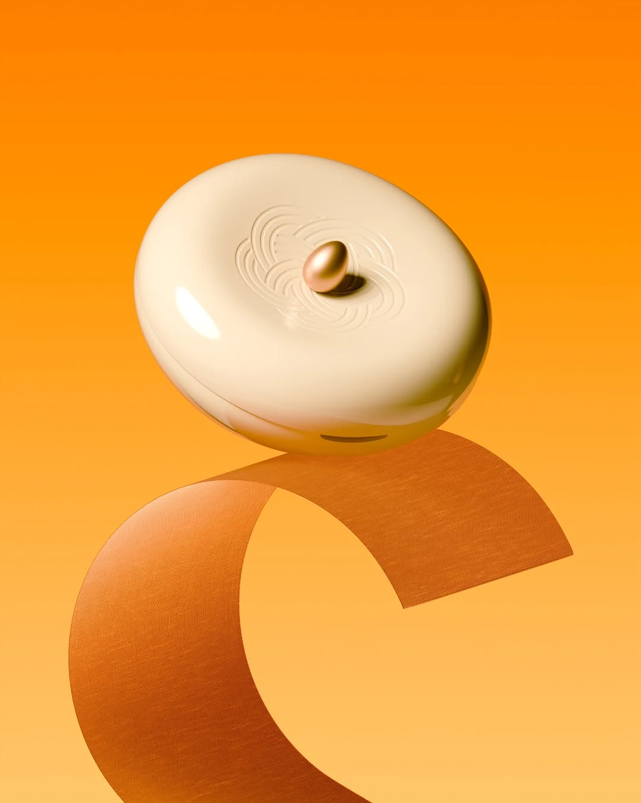
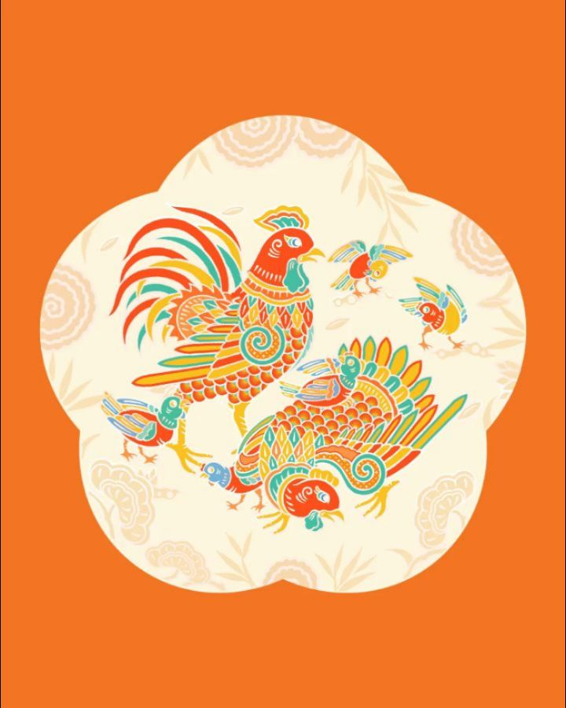
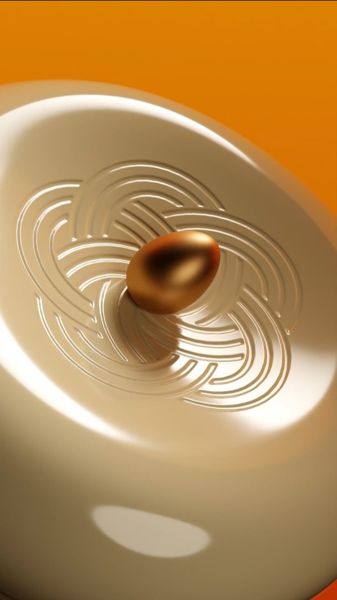

Một đề xuất dành cho công việc đọc và viết cùng nhau -- từ việc ghi lại câu chuyện đằng sau từng dự án, đến mở ra một cái cửa cho những người muốn tìm đến chị.
Mình biết điều đó ngay từ bài đầu tiên. Không phải vì nội dung hay vì dự án đẹp -- mà vì cách chị kể. Khi chị viết về letterpress, chị không viết "mình vừa làm xong thiết kế thiệp" -- chị kể về tâm trạng chờ đợi màu mực chưa pha bao giờ trước khi đặt bản in đầu tiên xuống. Đó là hai thứ khác nhau hoàn toàn.
"Letterpress là một công việc rất thú vị vì bạn sẽ luôn có một màu mực chưa pha bao giờ, một loại giấy mới để thử và một tâm trạng tò mò chờ đợi thành phẩm." @backnforthhh, 11/2025
Rồi đến bộ Ngũ Phúc. Chị viết: "Ngũ Phúc không phải là những khái niệm lớn lao mà là những điều rất nhỏ." Và chị giải thích từng chữ Hán không phải bằng định nghĩa từ điển -- mà bằng những tình huống cụ thể, đầy đời thường. Đó không phải là content marketing. Đó là văn.
"Khang không nằm ở địa vị, mà ở sự yêu thương, trân trọng và giá trị con người. Ninh là sự bình yên -- cảm giác được là thong dong tự tại trong cuộc sống hàng ngày." @backnforthhh, 02/2026
Account này tên là back and forth -- không phải vì chị thích cái tên nghe cool. Mà vì đối với chị, quá trình đi tới lui giữa designer và client không phải là thứ cần giảm thiểu. Nó là nơi mà thiết kế thực sự xảy ra. Mình đã đọc toàn bộ 10 bài -- và mình thấy chị chưa kể hết câu chuyện đó. Đó là lý do mình viết đề xuất này.

Ancient Hue x backnforthhh
Illustration, Jan 2026
3 bài về dự án Ngũ Phúc Hội Tổ (Eggyolk) đạt trung bình 160 likes -- gấp rưỡi avg chung của account. Đây là content chị viết tốt nhất và audience phản hồi mạnh nhất. Nhưng 0 hashtag kết nối những người làm thiết kế, thương hiệu, quà tặng với những bài đó.
Cơ hội: Mở cửa phát hiện không làm loãng giọng -- chỉ cần dùng hashtag của cái chị đã làm.
10 bài đăng, 0 CTA, 0 thông tin liên hệ. Bio không có link, không có email, không có "work inquiries". Ai xem dự án của chị và muốn liên hệ -- họ không biết làm thế nào. Work của chị xứng đáng được nhiều client tốt hơn, nhưng hiện tại chị đang để họ tự tìm.
Cơ hội: Một landing page đơn giản và một dòng trong bio có thể đổi cách tiếp cận client hoàn toàn.
1 Reel duy nhất đạt 908 views. 9 carousel còn lại không có view count Reels. Một Reel -- chính xác là thứ chị chưa làm nhiều -- đang cho thấy potential reach lớn nhất trên account này. Quá trình letterpress, sơn mài, hay revision với client chính là material cho những Reels đó.
Cơ hội: 1 Reel process mỗi 2 tuần có thể nhân 5-10x reach so với carousel hiện tại.
Đây là một bài carousel 9 slides, được viết sau khi mình đọc toàn bộ 10 bài của chị. Mình cố ý mirror cách chị viết -- nhịp câu, cách mở bài, cách chị không dạy bảo mà chỉ kể. Nếu bài này nghe giống chị -- đó là chủ đích.

Không cần cam kết ngay. Chị cứ nhắn tin cho mình trên Instagram -- mình sẽ trả lời trong ngày.
Nhắn tin cho mình